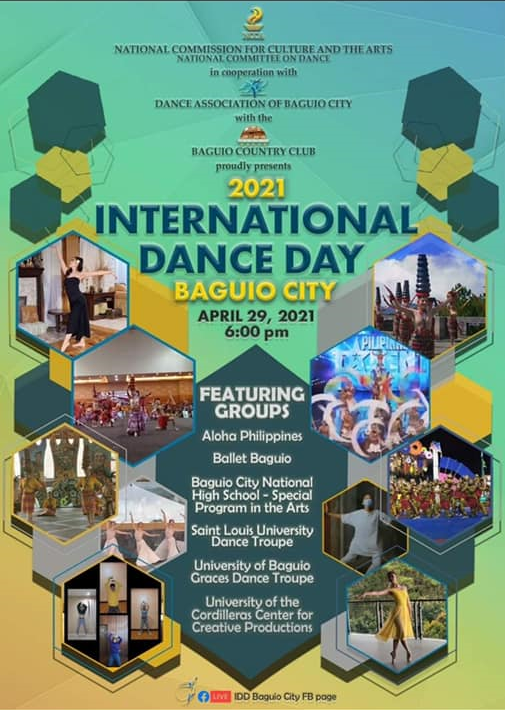
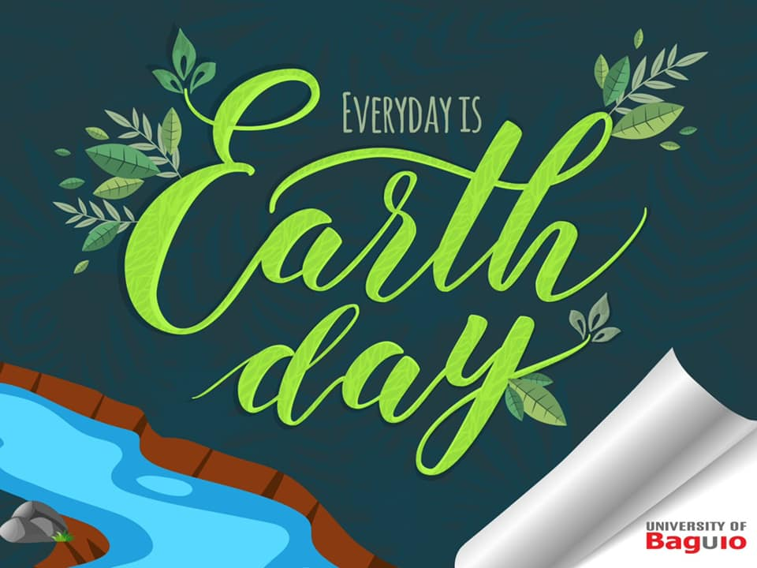

CELEBRATE DANCE WITH LEAPS, SPINS, AND GRACES!
GRACES, the University of Baguio Dance Troupe is among the premier dance and performing groups joining the National Commission for Culture and the Arts' (NCCA) National Commission on Dance, the Dance Association of Baguio City, and the Baguio Country Club for the International Dance Day of Baguio City!
Watch this creative celebration on April 29, 6:00 PM! Follow the @International Dance Day - Baguio City's Facebook account for the show and for more details! The dynamism of dance is unstoppable... and we enjoin everyone to join us in celebrating this art of movement and form!

A COMMITMENT TO MAKING EVERYDAY AN EARTH DAY
Did you know that Earth Day went global since 1990, mobilizing 200 million people in 141 countries to stand up for the earth and its sustainability? This effort was sparked by the first Earth Day in April 22, 1970 in the US. This year's theme, "Restore the Earth" renounces the principle that "mitigation or adaptation are the only ways to address climate change"
Make the Earth Day a reminder to be a steward of nature and protector of the environment, wherever we are, whatever we do. What particular efforts can you make from where you are today to keep your part in championing for #MotherEarth? That is our everyday question.
{kind=link}